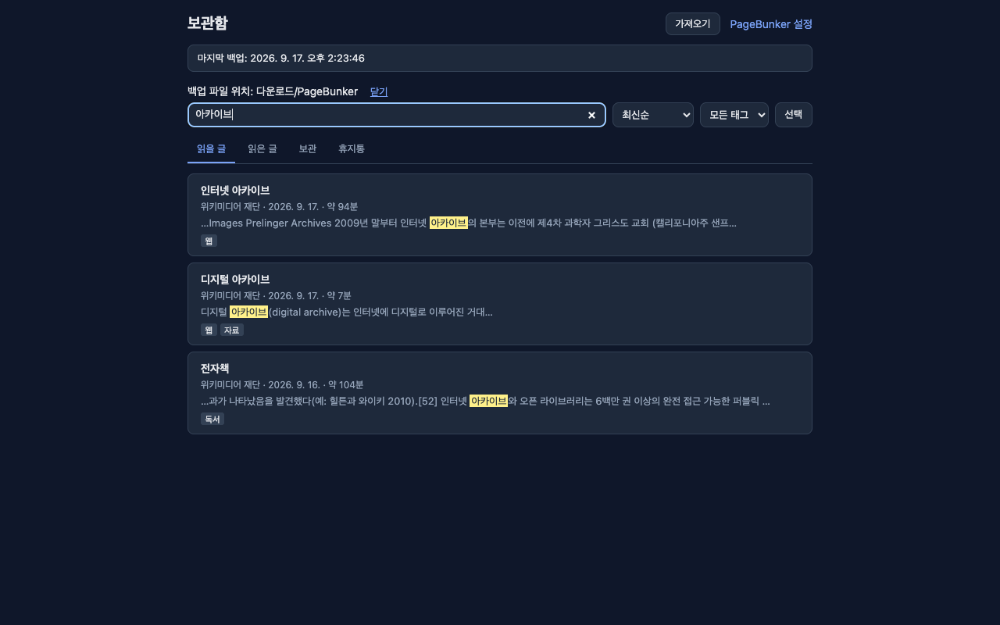

저장한 기사 여러 편의 본문을 한꺼번에 검색하기
데스크톱 브라우저에서 기사를 저장한 뒤, 보관함에서 그 본문을 함께 찾습니다. 계정과 서버는 없습니다.
1. 본문을 먼저 저장하기
문장 검색은 이 컴퓨터에 이미 저장해 둔 글을 봅니다. 본문의 단어를 찾으려면 그 기사를 연 상태에서 먼저 저장하세요.
- 툴바 버튼을 누른 뒤 "이 글 저장"을 선택합니다.
- 페이지를 우클릭하고 "이 글 저장"을 선택합니다.
Alt+Shift+L을 누릅니다. 맥에서는Option+Shift+L입니다.
제목, 작성자, 날짜, 본문을 남기고 광고, 메뉴, 댓글은 빼둡니다. 기사 본문을 뽑지 못하면 링크만 남습니다.
2. 보관함 검색창에 입력하기
PageBunker 보관함을 열고 위쪽 검색창을 사용합니다. 비어 있을 때의 안내 문구는 "글 검색"입니다. 검색어 하나는 저장한 각 기사의 제목, 작성자, 사이트 이름, 태그, 저장한 본문과 비교됩니다. 열어 둔 탭은 검색 범위를 줄이지 않습니다. 읽을 글, 읽은 글, 보관, 휴지통을 함께 보고, 선택한 태그도 범위를 좁히지 않습니다.
입력한 단어는 그 기사 안에 모두 있어야 합니다. 단어 순서를 유지해야 하면 따옴표로 묶으세요. 예를 들어 "링크 부패"처럼 입력합니다. 따옴표로 묶은 구절은 항목 하나로 셉니다. 검색창은 항목을 여덟 개까지 쓰며, 각 항목은 100자까지 읽습니다.
영문 대소문자와 앞뒤 공백은 일치 여부를 바꾸지 않습니다. 한국어와 영어 본문을 모두 검색합니다.
3. 여러 기사의 일치 문장 보기
일치하는 기사가 함께 나열됩니다. 단어가 저장한 본문에 있으면 카드에 첫 일치 주변의 짧은 문장이 보이고, 그 단어가 표시됩니다. 검색 한 번으로 여러 기사에서 같은 단어를 볼 수 있습니다.

제목이 일치하는 기사가 사이트 이름이나 태그만 일치하는 기사보다 앞에 나오고, 그다음이 본문에서만 일치하는 기사입니다. 같은 방식으로 일치하면 더 최근에 저장한 기사가 앞에 옵니다.
본문 없이 제목만 있는 링크도 제목, 사이트 이름, 태그로는 찾을 수 있습니다. 본문을 저장하기 전에는 기사 문장이 카드에 나오지 않습니다.
4. 기사를 열어 읽기
결과를 선택하면 읽기 화면에서 저장한 본문이 열립니다. 글자 크기, 줄간격, 폭, 밝은 테마와 어두운 테마를 바꿀 수 있고, 읽던 위치를 기억합니다.
끝까지 읽으면 읽음으로 표시될 수 있습니다. 이 동작은 설정에서 끌 수 있습니다.
5. 검색이 보는 범위
- 검색 범위는 이 컴퓨터의 보관함 전체입니다. 읽을 글, 읽은 글, 보관, 휴지통을 함께 봅니다. 열린 웹 전체를 검색하지 않고, 저장하지 않은 페이지도 검색하지 않습니다.
- 본문의 단어는 그 본문이 저장되어 있을 때 찾습니다. Pocket CSV의 한 줄이나 다른 가져오기 링크만으로는 그 단어가 들어오지 않습니다.
- 카드의 문장은 저장한 본문에서 첫 일치 주변을 짧게 자른 것이며, 기사 전문이 아닙니다.
- 검색창을 비우면 열어 두었던 탭과 태그 목록으로 돌아가며, 검색 조건은 사라집니다.
- 검색 한 번에 목록으로 나오는 기사는 최대 500편입니다.
검색 동작은 이 저장소의 확장 소스와 공개 기능 설명을 기준으로 확인했습니다. PageBunker README.
6. 오프라인 읽기와 원문 주소
저장한 글자는 네트워크가 없어도 열리며, 원문 페이지가 사라진 뒤에도 열립니다. 원문 주소는 그대로 남아 있어, 그 사이트가 열려 있으면 원문으로 이동할 수 있습니다.
7. 모바일 앱과 동기화는 없음
PageBunker는 크롬, 엣지, 파이어폭스, 웨일용 데스크톱 브라우저 확장입니다. 모바일 앱은 없습니다. 계정이나 서버로 보내는 데이터가 없으므로 컴퓨터와 휴대폰 사이에서 보관함이 동기화되지 않습니다.
보관함은 이 컴퓨터의 브라우저 안에 있습니다. 백업 파일은 다운로드/PageBunker 아래에도 기록됩니다. 그 파일을 다른 컴퓨터로 복사해 복원하는 것은 직접 옮기는 일이며 동기화가 아닙니다. 사파리는 지원하지 않습니다.
크롬, 엣지, 웨일은 1.1.2, 파이어폭스는 1.1.1이 공개되어 있습니다. 1.1.2에서 바뀐 것은 스토어 이름이며 검색은 같습니다.
내보내기 파일이 링크로 들어오고, 그 뒤에 본문을 채우는 순서는 보관 중인 Pocket·Instapaper 파일 가져오기를 보세요.
PageBunker를 쓰고 있나요? 괜찮다면 어디서 알게 됐는지, 전에는 무엇을 썼는지 알려 주세요. 어떤 소개가 실제로 도움이 되는지 아는 데 씁니다. 선택 사항이고 리뷰나 별점은 필요 없어요. 짧은 메모 남기기